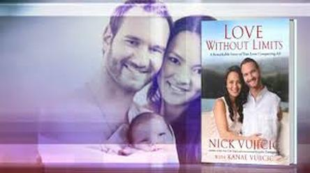

Love Without Limits
Even though he was born without arms or legs, Nick Vujicic created a “ridiculously good life.” But after dating disappointments and a failed relationship, he reached his mid-twenties worried that he would never find a woman to love him and share his life. Then Nick met Kanae and everything changed. But even with undeniable chemistry, they would have to navigate twists and turns worthy of a romantic comedy before becoming “one” in marriage. In Love Without Limits Nick and Kanae tell how they improbably found each other, fell in love, and then fought to overcome skepticism from others about their relationship. Filled with practical insights that will benefit any couple, this inspiring book describes a godly courtship and the early years of the Vujicics’ marriage and parenting journey. Above all, Love Without Limits is an inspiring reminder that when Christ is at the center of a relationship–even with serious challenges–true love will triumph.
“Despite my optimism about other parts of life, I decided that love in this world had limits after all. I’d become convinced that no woman would want to marry such an obviously imperfect man as me….” As a boy growing up in Australia, Nick Vujicic could not understand why God had allowed him to be born without limbs and if He would ever bring a woman into Nick’s life. On the other side of the world, Kanae Miyahara—a girl growing up in Mexico—saw dysfunction sadly separate her family. She wondered if a loving, lasting marriage was even possible. Later, when Nick realized that God had a purpose for him, his life took on new meaning. But after a long-term relationship ended in heartache, would he ever find someone to marry? Kanae experienced relationships based on superficial attraction, but she longed to find a mate with strong character and faith—a man who would be a godly husband and father. When Nick and Kanae met in the most amazing way, they realized that God—the ultimate Matchmaker– had used even their discouraging and painful experiences to prepare them for each other…for the love of their life.